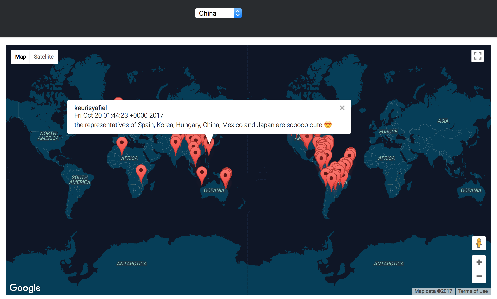

TwittMap
Assignment 1 - COMS E6998 Cloud Computing and Big Data
Shiqi Fu (sf2788) & Ran Li (rl2836)
We collected over 10 MB data using Twitter API and stored the tweets using AWS ElasticSearch on the back-end. The web application is deployed on Elastic BeanStalk.
Features We Have
-
Select a keyword from the dropdown menu and view the location of tweets. For example, Search on the Keyword 'China', all the tweets containing ‘China’ will be displayed on the map.

-
Click on a marker to see associated tweet content.
 -
Navigate to the Elastic Search page. Click on the map, display the tweets with in 100KM from the point the user clicked
(Add the image here!!)
Tools We Used
-
Twitter Streaming API
-
GoogleMaps API
-
AWS Elastic Search
-
AWS Elastic Beanstalk